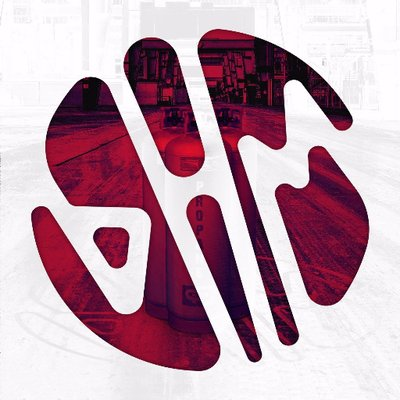

Algunos exponentes del Bass House son:
Virtula Riot
Porter Robinson
Illenium
Panda Eyes
Y no puede faltar Martin Garrix V:

Future Bass
El future bass es un término genérico de bass music que surgió alrededor de 2006 con influencias de música chill, footwork y trap. Este género comprende una amplia variedad de sonidos y ritmos normalmente producidos por un sintetizador.
El future bass se caracteriza por sus sintetizaciones simultáneas de ondas de dientes de sierra y ondas cuadradas en distintos tonos. Las ondas de sonido a menudo se modulan mediante la automatización o la oscilación de baja frecuencia controlando el corte de un filtro de audio (low pass filter).7 Este género posee elementos de future garage, un estilo de música que mezcla música ambiental con electrónica de carácter relajante. También toma sonidos del ritmo de la música footwork, crunk, y trap, una gama de estilos musicales que se derivan de la fusión de electrónica con hip hop. Como su predecesor, el deep drum and bass y el chillstep, el future bass está influenciado por los elementos de música bass y las producciones son similares a ésta.
Kawaii future bass
El kawaii future bass (también llamado kawaii bass o moe bass) es un estilo procedente del future bass, se compone por influencias de la cultura otaku y música chiptune. Presenta un paisaje "alegre" y "adorable" con samples de anime, videojuegos, o sonidos cómicos.
Algunos exponentes del Bass House son:
Virtula Riot
Porter Robinson
Illenium
Panda Eyes
Y no puede faltar Martin Garrix V: